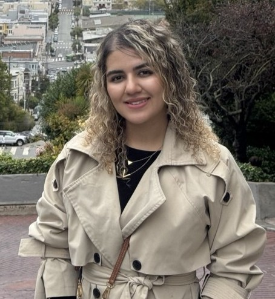

Negar Haghpanahi
PhD Student in Computer Science · Graduate Research Assistant
Washington State University, Pullman, WA · Advisor: Dr. Ganapati Bhat

I build machine learning that works where it is needed. On one side, small, energy-efficient models that run on wearable, IoT, and energy-harvesting devices, using early-exit networks that cut energy use by up to 60% with less than 1% accuracy loss. On the other, clinical AI: a digital twin and prognostic agent for severe traumatic brain injury, developed with St. Luke’s Rehabilitation Institute and the WSU Elson S. Floyd College of Medicine.
Research
Clinical digital twin for severe traumatic brain injury
A digital twin that predicts recovery milestones after moderate-to-severe TBI (time to follow commands, post-traumatic amnesia, and long-term outcome) and updates its forecast as recovery unfolds. Includes missing-data handling, ensemble feature selection, more than 12 benchmarked models, and a reinforcement-learning agent for long-term follow-up.
Early-exit inference for edge and wearable devices
Models that stop computing as soon as they are confident enough, saving energy on small devices.
- AdaExit: confidence-based early exits; 50–60% less energy with under 1% accuracy loss across six wearable-sensor benchmarks.
- SEE-RF: sensor-aware early-exit random forests for IoT time-series applications.
- DIAL: energy management for energy-harvesting IoT devices using early-exit classifiers.
- EMI: Bayesian optimization of the energy–accuracy trade-off, with a runtime controller deployed on NVIDIA GPU and Raspberry Pi.
- Early exits combined with dynamic sampling frequency for efficient time-series classification.
LLM-augmented next-action prediction
Compared LSTM and LLM-augmented models on smart-home activity data, analyzing the trade-off between edge latency and accuracy.
Publications and presentations
- Belhaj S*, Haghpanahi N*, Nelson, Bhat G, et al. Energy-efficient time series applications on IoT devices via sensor-aware early exit random forest architectures (SEE-RF). ESWeek, 2026.
- Haghpanahi N, Bhat G, Kemp A, Jackson F. Building and evaluating a digital twin for severe traumatic brain injury: predicting recovery milestones and refining prognosis through sequential updating. American Congress of Rehabilitation Medicine (ACRM) Annual Conference, 2026. Poster. Poster page
- Haghpanahi N, Alizadehziri F, Bhat G. Adaptive early exits with dynamic sampling frequency for efficient time-series classification.
- Haghpanahi N, Jackson F, Kemp A, Bhat G. Designing for accelerated translation of a prognostic agent in traumatic brain injury.
- Haghpanahi N, Alizadehziri F, Bhat G. DIAL: re-imagining energy management in energy-harvesting IoT devices via early exit classifiers.
Experience
Graduate Research Assistant, Washington State University
2025 – presentEdge AI and early-exit architectures; clinical digital twin for TBI; training on the Kamiak HPC cluster.
Research Collaborator, Augusta University
2022 – 2024Machine learning for differential diagnosis of ear disease; acoustic side-channel research on keyboards.
AI Developer, BizGPT (remote)
2024Built an LLM-powered chatbot with LangChain and Hugging Face, and automated data pipelines with Apache Airflow.
Data Engineer, Bahar Ertebat Gostar
2022 – 2024Machine learning and clustering pipelines in Python; database and SQL performance optimization.
Education
PhD (Direct Path), Computer Science
2025 – presentB.Sc., Computer Science
2019 – 2023Teaching
- Washington State University (2025 – 2026): Teaching Assistant for Big Data, Advanced Data Structures, Cyber Security, Computer Programming, Database Systems, and Program Design & Development.
- Amirkabir University of Technology (2022 – 2024): Teaching Assistant for Numerical Linear Algebra, Principles of Software Design, and Programming Languages.
Awards and service
- Winner, Call for Ideas, Washington State Academy of Sciences, 2026: energy-neutral edge AI for agriculture
- 2nd Place, AgAID Digital AgAthon, 2025: predictive ML workflows for crop residue coverage
- NVIDIA Fundamentals of Deep Learning certification, 2025
- Reviewer, IEEE Design & Test, 2026
Skills
Machine learning: PyTorch, TensorFlow, scikit-learn, XGBoost, SHAP, CNNs, LSTMs, Transformers, early-exit networks, model compression, quantization, Bayesian optimization, reinforcement learning
LLM systems: LangChain, Hugging Face, RAG, agentic and on-device AI
Systems: Python, C/C++, SQL, Linux, Git, Slurm/HPC, Apache Airflow, MongoDB, NVIDIA GPU and Raspberry Pi deployment